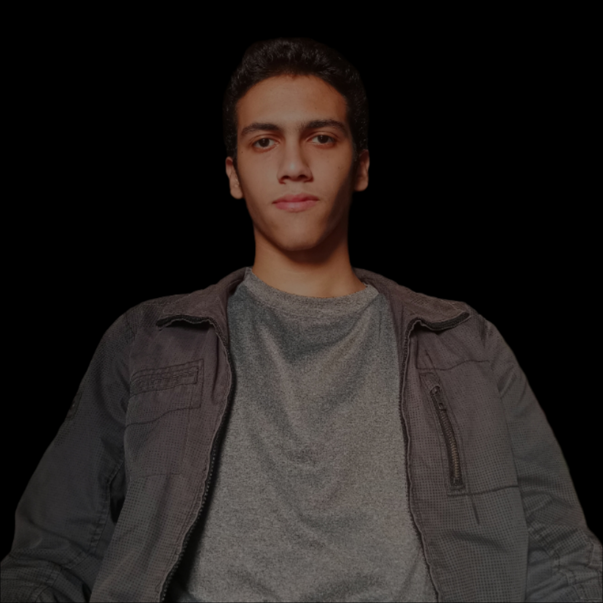

About me, athletic obsessed with running, looking for a team who is also passionate by organizing running events that will be on Cairo streets at 7am one day a week we will enjoy. We will give the winners of 🥇🥈🥉 a certificate greatings for their achievement and effort.
